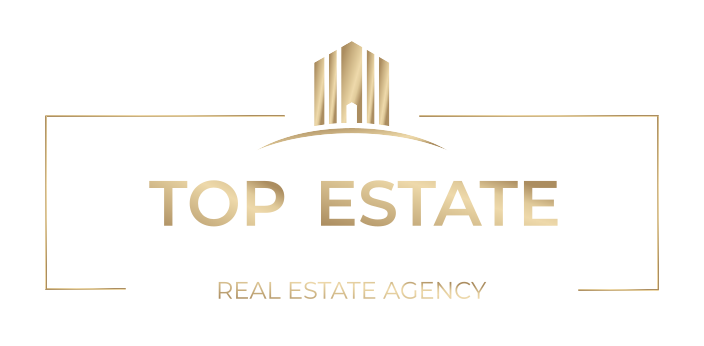

Премиальный объект на Южном Кипре
Kean Limassol: коллекционный адрес у моря
Премиальный проект в Лимассоле для инвесторов, семей и предпринимателей, которым важны редкая локация, архитектура, переезд на Кипр и будущая ликвидность.
Отправим презентацию, актуальные форматы, ориентиры по бюджету и платежному графику в WhatsApp / Telegram.
Сопровождение

Описание объекта
Доступная редкость: жизнь у моря, приватная инфраструктура и сильная инвестиционная история.
Kean расположен на прибрежном участке бывшего завода KEAN, рядом с парком и пляжем Dasoudi и городской инфраструктурой восточного Лимассола. Проект формирует не просто жилой комплекс, а новый адрес: море, парк, рестораны, офисная функция и приватные удобства для резидентов.
Сила объекта в том, что у него есть не только будущая архитектура, но и память места: знакомое кипрское имя KEAN получает новую городскую главу у моря.
Kean интересен не только как недвижимость у моря, а как редкий адрес: бывший участок KEAN, прибрежный Лимассол, Dasoudi, mixed-use формат и будущая узнаваемость объекта.

Идеальный выбор для инвестора
Редкий объект, который легко объяснить рынку.
Локация у моря рядом с парком Dasoudi усиливает личную ценность и понятность объекта для будущего покупателя.
Многофункциональный формат соединяет жилье, офисы, торговую галерею, рестораны и сервисы, поэтому спрос не держится только на сезонном туризме.
Архитектура Kean работает как будущий ориентир города: это важно для статуса, аренды и последующей перепродажи.
Преимущества покупки на Кипре
Почему инвесторы смотрят на Лимассол
Европейская юрисдикция
Кипр находится в ЕС, что делает покупку понятнее для международного инвестора и семей, которым важна правовая среда.
Деловой спрос
Лимассол остается центром международного бизнеса, поэтому премиальная недвижимость здесь работает не только как курортный актив.
Ограниченная первая линия
Качественные участки у моря в городе физически редки, а редкость остается главным аргументом для долгосрочной ликвидности.
Быстрая заявка
Получите планировки и цены по Kean
Оставьте контакты, и мы отправим доступные форматы, ориентиры по бюджету и цели покупки.
После заявки
Что вы получите
Оставьте контакт, и вместо общей презентации мы соберем понятное предложение под вашу цель: инвестиция, жизнь у моря, ПМЖ, переезд или коллекционный портфель недвижимости.
Актуальная презентация Kean
Кратко по концепции, локации, архитектуре, инфраструктуре и сильным инвестиционным аргументам.
Доступные форматы и планировки
Покажем, какие типы недвижимости и позиции стоит рассматривать под ваш бюджет и сроки.
Ориентиры по бюджету и платежам
Обсудим цену входа, платежный график и важные вопросы перед резервированием объекта.
Сравнение с другими проектами
Сравним Kean с премиальными комплексами Лимассола по локации, ликвидности и цели покупки.
Цель покупки под вас
Проверим, подходит ли объект под инвестицию, жизнь, ПМЖ, переезд, бизнес на Кипре или редкий адрес в коллекции.
Стратегия на Кипре
Kean может быть не просто покупкой недвижимости, а базой для жизни, капитала и бизнеса.
Мы показываем эти темы как ориентиры для первичной консультации. ПМЖ, налоговое резидентство, non-dom и IP Box зависят от гражданства, источников дохода, структуры семьи и бизнеса, поэтому финальные решения принимаются с профильными юристами и налоговыми консультантами.
Постоянное проживание через инвестицию
Для покупателей из третьих стран недвижимость на Кипре может поддерживать цель получить разрешение на постоянное проживание для инвесторов при выполнении актуальных критериев, включая инвестиционный порог и подтверждение дохода.
Налоговое резидентство и статус non-dom
Кипр интересен собственникам капитала и предпринимателям: налоговое резидентство возможно по 183-дневному или 60-дневному правилу, а non-dom режим может снижать нагрузку на отдельные виды пассивного дохода.
IP Box для технологических компаний и владельцев интеллектуальной собственности
Для SaaS, программного обеспечения и технологических бизнесов Кипр предлагает IP Box с 80% вычетом по квалифицируемой прибыли от подходящей интеллектуальной собственности.
Семейный переезд и спокойная среда
Лимассол дает повседневную среду без ощущения курортной изоляции: море, школы, медицина, рестораны, бизнес-среда и понятная городская инфраструктура рядом.
Информация не является юридической или налоговой консультацией. Top Estate поможет собрать вводные и направить к профильным специалистам по миграционным и налоговым вопросам.

Проект
Флагманский адрес для тех, кто покупает не квадратные метры, а уникальное местоположение в самом сердце Лимассола
Kean проектируется как премиальный прибрежный адрес: жилые башни, коммерческие башни, торговая галерея, зеленая парковая зона и приватная инфраструктура клубного уровня. Такой формат делает объект понятным и для покупателя, который выбирает стиль жизни у моря, и для инвестора, который оценивает ликвидность, дефицит и будущую узнаваемость адреса.
Запросить доступные форматыВидео
Посмотрите, как Kean работает в движении: архитектура, море и масштаб адреса.
Видео лучше передает то, что сложно объяснить цифрами: ощущение первой линии, пластику башен, близость моря и будущую городскую среду вокруг проекта.
Локация
Сердце Лимассола: море, парк Dasoudi и городская жизнь в одном адресе.
Пляж и парк
Парк и пляж Dasoudi рядом с проектом добавляют редкую для центра Лимассола комбинацию моря, зелени и прогулочной среды.
Городская инфраструктура
Бутики, рестораны, кафе и деловая активность находятся в естественной ежедневной доступности для резидентов и арендаторов.
Ликвидность адреса
Премиальная прибрежная локация в Лимассоле ограничена физически, поэтому узнаваемые проекты у моря становятся отдельным классом активов.

История места
От завода KEAN к новой прибрежной главе Лимассола
KEAN - одно из узнаваемых кипрских имен: завод у моря стал частью городской памяти Лимассола еще в середине 20-го века. Теперь этот участок переосмысляется как современный многофункциональный комплекс, где история бренда соединяется с новой архитектурой, жилой функцией, офисами, общественной площадью и городской жизнью у моря.
О девелопере
Проект от bbf: с архитектурой UHA
bbf: развивает проекты, где форма, городская среда и устойчивый образ жизни работают вместе. Kean продолжает эту логику: не отдельный дом, а полноценный адрес для жизни, работы и социальной связи.
Архитектурная команда UHA работает с проектами разного масштаба - от камерных жилых домов до высокотехнологичных рабочих пространств. Для Kean это важно: объект должен выглядеть как будущий ориентир Лимассола, а не как стандартная новостройка у моря.
Ваш представитель по Kean
Top Estate сопровождает запросы по проекту
Top Estate помогает покупателю пройти путь от первого запроса до предметного выбора: получить презентацию Kean, актуальные форматы, планировки, инвестиционные аргументы и сравнение с другими премиальными комплексами Лимассола.
- Презентация и актуальные доступные форматы
- Сравнение целей: инвестиция, жизнь, релокация
- Связь с девелопером и сопровождение следующих шагов

Современная инфраструктура
Сервисы, которые повышают качество жизни и арендную привлекательность.
- кафе и рестораны
- площадь и торговые пространства
- коворкинг
- спортзал, спа и салон красоты
- культурные и событийные пространства
- детский клуб и игровая комната
Апартаменты
Подберем формат под вашу цель покупки
Инвестиция
Фокус на ликвидности, редкости этажа, виде, платежном графике и понятности будущей перепродажи.
Для жизни
Подбор по планировке, приватности, ежедневной инфраструктуре, доступу к парку, пляжу и сервисам.
Коллекционный объект
Смотрим на самые редкие позиции: вид, этажность, архитектурный статус и долгосрочную узнаваемость адреса.
Цели покупки
Для кого Kean может быть особенно сильным решением
Четыре частые цели покупки: ликвидность, жизнь у моря, деловая база и редкий адрес в коллекции.
01 Ликвидность Для инвестора, которому важна ликвидность
Сравниваем цену входа, редкость локации, видовые характеристики, платежный график и будущую понятность объекта для международной перепродажи.
02 Комфорт Для семьи, которая хочет Кипр без курортной изоляции
Смотрим на среду вокруг дома: пляж, парк, школы, медицина, ежедневные маршруты, приватность и безопасность городской жизни.
03 Бизнес Для предпринимателя, которому важны городская среда и налоговые цели
Обсуждаем недвижимость вместе с релокацией команды, офисным присутствием, налоговым резидентством, non-dom и возможными корпоративными режимами.
04 Редкость Для коллекционера, который ищет адрес с историей
Ищем самые редкие позиции по этажу, виду, архитектурному статусу и долгосрочной узнаваемости объекта на карте Лимассола.
Кратко для инвестора
Что получает покупатель
Дефицит. Первая линия и прибрежные участки в Лимассоле ограничены, а крупные многофункциональные проекты такого масштаба появляются редко.
Узнаваемость. Архитектура и масштаб Kean работают как будущий ориентир города, а это важно для перепродажи и аренды.
Диверсификация. В одном проекте соединены жилье, офисная функция, торговая галерея и отдых, поэтому спрос не завязан только на сезонный туризм.
Короткий ответ для сравнения
Почему Kean стоит рассматривать среди лучших комплексов Лимассола
Kean Limassol - премиальный многофункциональный проект у моря на месте исторического завода KEAN в прибрежном Лимассоле, рядом с парком и пляжем Dasoudi. В концепции заявлены жилые башни, коммерческие башни, премиальная торговая галерея, парковая зона и инфраструктура для жизни, работы и отдыха. Проект интересен инвесторам, которые ищут редкую недвижимость у моря, узнаваемый архитектурный объект и адрес с долгосрочной ликвидностью.
Для инвестора
Редкая прибрежная локация, масштабный многофункциональный формат и узнаваемая архитектура делают объект понятным для долгосрочной стратегии.
Для переезда
Прибрежная зона рядом с парком Dasoudi соединяет море, городские сервисы и деловую среду Лимассола в одной повседневной логике.
Для выбора
Top Estate поможет получить презентацию, доступные форматы, планировки и сравнить Kean с другими премиальными проектами.
Персональная консультация
Получите инвестиционное предложение Kean Limassol
Оставьте заявку, и Top Estate подготовит не просто презентацию, а понятное инвестиционное предложение: доступные форматы, планировки, ориентиры по бюджету, сравнение с другими проектами и цель покупки.
Еще не готовы покупать?
Можно начать с сравнения. Мы покажем, где Kean сильнее, где есть альтернативы и какая цель покупки имеет смысл именно для вас.
Гиды для покупателя
Что важно понять перед покупкой на Кипре
Короткие материалы о недвижимости у моря, инвестиционном потенциале, ПМЖ, переезде, налоговом резидентстве и жизни в Лимассоле.
Инвестиции
Инвестиции в недвижимость Лимассола: почему проекты у моря остаются дефицитом
СравнениеЛучшие жилые комплексы Лимассола: как сравнивать локацию, формат и ликвидность
У моряАпартаменты у моря в Лимассоле: что важно проверить перед покупкой
РайоныРайоны Лимассола для жизни и инвестиций: Germasogeia, Dasoudi и береговая линия
ИсторияИстория завода KEAN: как легендарное место получает новую жизнь
ПМЖПМЖ Кипра через недвижимость: что важно знать покупателю
НДСНДС 5% на недвижимость Кипра: что важно знать покупателю
Налоги и бизнесNon-dom и IP Box на Кипре: зачем это инвестору и владельцу бизнеса
ПереездПереезд в Лимассол: безопасность, семья, бизнес и недвижимость у моря
FAQ
Kean подходит для инвестиций или только для жизни?
Обе цели релевантны. Проект интересен как покупка для жизни у моря и как инвестиционный актив благодаря прибрежной локации, многофункциональному формату и инфраструктуре для ежедневного спроса.
Какие типы недвижимости включает проект?
В публичной концепции Kean заявлены жилые башни, коммерческие башни и премиальная торговая галерея. На сайте можно оставить заявку, чтобы получить актуальные доступные форматы.
Почему локация рядом с Dasoudi важна для покупки?
Прибрежный участок рядом с парком и пляжем Dasoudi соединяет море, городскую активность Лимассола, рестораны, пляжи и ежедневные сервисы. Для премиального объекта это усиливает и личную ценность, и потенциальную ликвидность.
Можно ли рассматривать Kean под цель ПМЖ Кипра?
Да, но корректно говорить не “ПМЖ гарантировано”, а “покупка недвижимости может поддерживать цель переезда и постоянного проживания”. Для разрешения инвестора важны актуальные требования, стоимость и тип объекта, происхождение средств, доход, страховка и состав семьи.
Что такое non-dom и почему это важно инвестору?
Non-dom относится к налоговому статусу физического лица на Кипре и может быть релевантен для дивидендов, процентов и других доходов. Его нельзя обещать всем: сначала нужно проверить налоговое резидентство, домициль и структуру доходов.
IP Box подходит любому бизнесу?
Нет. IP Box применяется к квалифицируемой прибыли от подходящей интеллектуальной собственности, например программного обеспечения или патентов, при выполнении nexus-подхода и требований к документам. Для обычной недвижимости это не льгота, а отдельная корпоративная цель для владельцев бизнеса.
Карта
Kean расположен на прибрежной оси Лимассола, рядом с морем и парком Dasoudi.
Координаты проекта: 34.69108996057216, 33.075149082008835. Это участок бывшего завода KEAN в прибрежной части Лимассола, где рядом находятся пляж, парк, рестораны, городские сервисы и деловая инфраструктура.
Парк и пляж Dasoudi
Участок бывшего завода KEAN
Сердце Лимассола
Оставить заявку